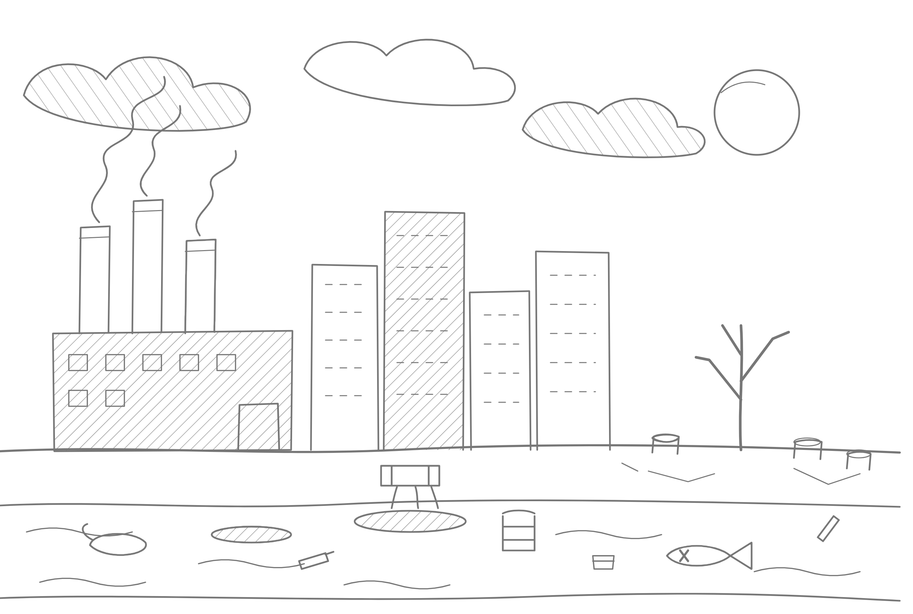

I am a geospatial researcher and MSc student in Applied Geoinformatics at Paris Lodron University of Salzburg, Austria. My research specializes in multi-hazard risk assessment, vulnerability analysis, and disaster risk reduction using GIS, remote sensing, Python, and machine learning.
I leverage high-resolution satellite imagery, spatial statistics, machine learning models, and hydro-climatic data to understand environmental risk dynamics, flood susceptibility, and seismic vulnerability to support resilient communities.
I have authored and co-authored peer-reviewed research papers in Taylor & Francis, Elsevier, and Springer Nature journals focusing on multi-hazard mapping, wetland dynamics, and flash flood prediction. I also bring hands-on professional industry experience as a GIS Analyst at the Institute of Water Modelling (IWM).
Worked in ICT, GIS & Remote Sensing Division on water modeling and environmental spatial analysis.
Spatial analysis and vulnerability mapping for climate change and migration projects.
Digitization, spatial data quality assurance, and processing large geospatial datasets.
Geospatial hazard modeling, Machine Learning applications, and spatial decision support systems.
GIS-based assessment of flood, cyclone, salinity, and erosion risks with vulnerability analysis in coastal Bangladesh.
Predictive flood susceptibility modeling using hydro-climatic extremes, land cover dynamics, and ensemble ML models.
Spatial evaluation of seismic risk and preparedness using Analytical Hierarchy Process (AHP) and geospatial integration.

Presented research on predicting thermal comfort impacts of urban water shrinkage in Dhaka using artificial learning models.

Presented assessing climate change adaptive capacity using geospatial techniques in coastal Bangladesh.
Mode of learning: Online
Having started my academic journey in Bangladesh, I understand how challenging it can be to navigate geospatial research with limited access to resources. As a way of giving back, I dedicate time to support students facing academic or research challenges in GIScience and Remote Sensing.
Select your preferred platform to reach out:
WhatsApp Send Email LinkedIn Direct Message